사출(프레스)금형설계기사 (2003-05-25 기출문제)
1과목: 금형설계
1. 금형에서 Core 냉각에 적용되는 방법 중 적합하지 않은 것은?
- Bubbler
- Baffle
- Flow break
- Cold runner
(정답률: 79%)

2. 성형품에 구멍이 뚫려 있는 보스가 있거나 가늘고 긴 코어가 있는 성형품의 밀어내기에 적합한 방법은 다음 중 어느 것인가?
- 원형 이젝터 핀
- 슬리브 이젝터핀
- 스트리퍼 플레이트
- 에어 이젝션
(정답률: 87%)
3. 다음은 사출금형의 에어 이젝션(air ejection)방식의 특징을 적은 것이다. 이 중에서 잘못된 것은?
- 성형품과 코어 사이의 진공에 의한 트러블을 해소해준다.
- 압축공기가 성혐품에 직접 작용하므로 백화현상이 남는 결점이 있다.
- 형개 공정 중의 임의의 위치에서 밀어내기가 가능하다.
- 압축공기가 금형속을 지남으로서 금형의 냉각작용도 겸하는 효과가 있다.
(정답률: 88%)
4. 다음 게이트 중에서 금형의 형개시 자동절단 되는 것은?
- 터널 게이트
- 탭 게이트
- 사이드 게이트
- 스프루 게이트
(정답률: 87%)
5. 다음은 러너리스 성형에 사용되는 수지의 성질을 적은 것이다. 이 중에서 잘못된 것은?
- 열화 온도가 낮을 것
- 열전도율이 높을 것
- 열안정성이 좋고 저온에서 잘 흐를 것
- 비열이 낮을 것
(정답률: 74%)
6. 수지의 수축률이 큼으로 수축현상(Sink mark)이 발생하였을 때 가장 적합한 개선방법은?
- 사출압력을 높인다.
- 수지온도를 높인다.
- 냉각시간을 줄인다.
- 이형제를 바른다.
(정답률: 71%)
7. 다수개 빼기금형에서 러너의 길이를 20 mm, 게이트의 랜드 길이를 1.5 mm, 그리고 러너의 직경을 4.0 mm로 했을때 게이트 밸런스의 값은? (단, SG/SR = 7 %이다.)
- 0.31
- 0.20
- 0.18
- 0.13
(정답률: 38%)
8. 그림과 같은 성형품의 외측 under cut율은 몇 %인가?
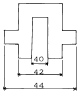
- 9.1
- 4.5
- 4.8
- 10.0
(정답률: 73%)
9. 러너리스 금형에서 러너형판의 러너를 가열 할 수 있는 시스템을 내장시켜 러너내의 수지온도를 일정하게 유지 시킬수 있는 것은?
- 핫 러너
- 콜드 러너
- 웰타입 노즐
- 인슐레이티드 러너
(정답률: 77%)
10. 캐비티 블록 및 코어 블록을 분할 금형으로 제작할 경우 장점으로 틀린 것은?
- 연삭가공, 연마사상이 용이하게 된다.
- 금형의 제조원가가 낮아진다.
- 가스배출구 설치가 쉬워 미 성형을 없게 한다.
- 용도별 재료의 선택이 용이하다.
(정답률: 93%)
11. 두께 1.5 ㎜, 전단강도 35㎏f/㎜2의 냉간 압연 강판을 사용하여 직경 30 ㎜의 제품을 블랭킹하고자 할때 다이블록의 두께를 설계하면? (단, 다이두께 보정 계수 = 1.25, 금형의 재연삭가공여유 = 2 ㎜ 이다.)
- 13.6 ㎜
- 15.6 ㎜
- 21.3 ㎜
- 23.3 ㎜
(정답률: 54%)
12. 용기의 직경이 30 ㎜ 이고 블랭크 두께가 1.2 ㎜인 황동판을 드로잉(drawing)한다면 드로잉력은 얼마인가? (단, 인장강도는 60 ㎏f/mm2, 보정계수(k) = 0.6 이다.)
- 1300 ㎏f
- 4072 ㎏f
- 6252 ㎏f
- 11310 ㎏f
(정답률: 70%)
13. 드로잉률에 영향을 주는 인자로서 틀린 것은?
- 재질과 판두께
- 펀치의 각 반지름
- 다이의 각 반지름
- 프레스기계의 선정
(정답률: 79%)
14. 다음 보기에 제시하는 금형설계의 플로차트는 어느 제품의 프로그레시브 금형을 나타내는가?
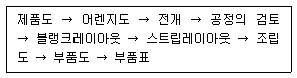
- 드로잉
- 피어싱
- 블랭킹
- 포밍
(정답률: 89%)
15. 원형,각형 드로잉의 코너부 수직벽에 미세한 주름 발생의 불량 대책으로 가장 적합치 못한 것은?
- 제품의 깊이를 얕게 한다.
- 다이각 반지름을 크게 한다.
- 각형의 코너각 반지름을 크게 한다.
- 제품의 깊이를 깊게 한다.
(정답률: 67%)
16. 단체다이에 비해 분할형 다이의 장점으로 틀린 것은?
- 다이 교환이 간단하다.
- 형상이 복잡한 경우에 가공이 용이하다.
- 펀치와의 균일한 클리어런스를 얻을 수 있다.
- 제작 공정수를 줄일 수 있다.
(정답률: 86%)
17. 단독 금형을 병렬로 설치하여 각 공정사이를 그립 핑거(grip finger)로 차례로 반송하여 자동적으로 프레스 가공을 하는 금형은?
- 트랜스퍼금형
- 프로그레시브금형
- 콤파운드금형
- 콤비네이션금형
(정답률: 70%)
18. 프로그레시브 금형에서 가장 많이 사용하는 다이세트의 형식은?
- FR형
- CR형
- CB형
- DR형
(정답률: 79%)
19. 100mm의 원형블랭크를 가지고 직경 60mm의 원형컵을 1회에 성형했을 때의 드로잉률은?
- 0.4
- 0.6
- 1.7
- 2.5
(정답률: 90%)
20. 프레스 램을 하사점까지 내린 상태에서 프레스 램 밑면과 볼스타 윗면 사이의 거리를 무엇이라고 하는가?
- 셧하이트(Shut height)
- S.P.M
- 스트로크(Stroke)
- 다이하이트(Die height)
(정답률: 78%)
2과목: 기계제작법
21. 프레스 금형에서 정밀한 펀치나 다이제작에 가장 적합한 장비는?
- CNC 와이어 컷팅기
- 머시닝센터
- 플레이너
- CNC 선반
(정답률: 82%)
22. 대형공작물이나 용접지그에 적당한 구조로 분할잠금핀을 이용하여 가공물의 등분 및 회전이 가능한 지그는?
- 채널지그
- 트러니언지그
- 리프지그
- 멀티스테이션지그
(정답률: 55%)
23. 래핑가공의 설명으로 틀린 것은?
- 산화알루미나, 탄화규소, 산화철 등이 있다.
- 랩은 가공물의 재질보다 연한 것을 사용한다.
- 표면거칠기를 좋게 하기 위해서는 랩제의 크기를 큰 입자를 선택한다.
- 래핑 다듬질 여유는 10㎛ ~ 20㎛ 정도가 적당하다.
(정답률: 80%)
24. 공기마이크로미터의 특징 중 옳지 않은 것은?
- 비교적 간단히 고배율(5000~10000)을 얻을 수 있다.
- 무접촉 측정이 가능하다.
- 많은 치수의 동시 측정은 불가능하다.
- 내경의 측정이 가능하다.
(정답률: 66%)
25. 연삭 숫돌의 무기질 결합제는 어떤 것인가？
- 비트리 파이드 : V
- 셀락 : E
- 러버 : R
- 레지노이드 : T
(정답률: 66%)
26. 측정기의 눈금 위에서 읽을 수 있는 측정량의 범위를 무엇이라 하는가?
- 감도범위
- 지시범위
- 오차범위
- 유효범위
(정답률: 81%)
27. 드릴의 치즐 포인트는 드릴의 절삭성에 큰 영향을 주는 것으로서 이 길이는 짧을수록 절삭 저항이 감소하지만 너무 짧으면 추력 때문에 찌그러지는 경우가 있다. 따라서, 강도를 유지하며 절삭성을 증가하기 위해서 날 끝의 일부를 연마해 주는 작업은?
- 드릴링(drilling)
- 씨닝(thinning)
- 탭핑(tapping)
- 리이밍(reaming)
(정답률: 90%)
28. 방전 가공시 전극 재질의 구비 조건이 아닌 것은?
- 방전시 안정성이 있을 것
- 가공하기 쉬울 것
- 전극 소모가 많을 것
- 가공 정밀도가 높을 것
(정답률: 89%)
29. 와이어컷팅머신(W-EDM)에서 와이어의 굵기가 가공속도에 어떤 영향을 미치는가?
- 와이어의 직경이 굵으면 가공속도는 느리다.
- 와이어의 직경과 가공 속도와는 무관하다.
- 와이어의 직경이 가늘수록 가공속도는 빠르다.
- 와이어의 직경이 클수록 가공속도는 빠르다.
(정답률: 83%)
30. 프레스가공의 종류에서 전단가공에 해당되는 가공은?
- 버링가공
- 노칭가공
- 헤딩가공
- 벌링가공
(정답률: 79%)
31. 두께 2 mm의 연강판을 지름 50 mm의 원판으로 블랭킹하려고 한다. 이때 필요한 전단력은 약 몇 ton인가? (단, 전단저항은 τ = 30 kgf/mm2로한다.)
- 8.5
- 6.5
- 7.5
- 9.5
(정답률: 63%)
32. 다음 그림과 같은 테이퍼를 심압대의 편위에 의해 가공하려고 한다. 이 때 편심량(offset)e는 얼마가 되겠는가?
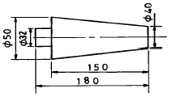
- e = 1.5 mm
- e = 2.5 mm
- e = 3 mm
- e = 6 mm
(정답률: 45%)
33. 미터 나사 탭(tap)구멍 작업시 지름을 구하는 식은? (단, 탭구멍 지름:d mm, 나사바깥 지름: D mm, 나사 피치 : p mm이다.)
- d = D - p
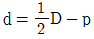
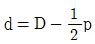
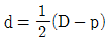
(정답률: 65%)
34. 단조나 주조품의 경우 표면이 울퉁불퉁하여, 볼트나 너트를 체결하기 곤란한 경우에 볼트나 너트가 닿을 구멍 주위 부분만을 평탄하게 절삭하는 방법은?
- 카운터 싱킹
- 보링
- 카운터 보링
- 스폿 페이싱
(정답률: 80%)
35. 압출공정에서 주로 발생하는 것과 거리가 먼 것은?
- 표면균열
- 파이프 결함
- 플래시
- 내부균열
(정답률: 83%)
36. 다음 중 레이저 가공기의 특징으로 바르게 설명한 것은?
- 접촉 가공이므로 공구의 마모가 없다.
- 금속 및 비금속 가공이 가능하다.
- 열에 의한 변형이 심하다.
- 수동가공외 자동가공이 불가능하다.
(정답률: 76%)
37. 피드 백 회로를 가지고 있지 않으므로 구조가 간단하고 스테핑 모터를 이용하여 구동되는 서보기구의 위치검출 방식은 어떤 것인가?
- 개방회로 방식
- 반폐쇄회로 방식
- 폐쇄회로 방식
- 복합회로 방식
(정답률: 68%)
38. 냉간용 금형강재의 구비조건이 아닌 것은?
- 경도 및 인성이 클 것
- 내마모성이 작을 것
- 열처리시 치수변화가 적을 것
- 기계가공성이 좋을 것
(정답률: 77%)
39. 블록게이지, 리미트게이지, 플러그게이지 최종 마무리 가공에 사용하는 가공방법은?
- 전해연마
- 래핑
- 초음파 가공
- 방전가공
(정답률: 81%)
40. 강철의 현미경 조직 중에서 서냉 조직이 아닌 것은?
- 페라이트
- 펄라이트
- 시멘타이트
- 오스테나이트
(정답률: 58%)
3과목: 금속재료학
41. 결정성 수지는 비결정성 수지에 대하여 용융수지의 흐름 방향의 수축이 직각방향의 수축에 비해 어떠한가?
- 변화가 없다.
- 크게 나타난다.
- 작게 나타난다.
- 예측할 수 없다.
(정답률: 87%)
42. 아연 32.5%의 Cu - Zn합금이 확산을 수반하지 않는 변태를 하여 마텐자이트(martensite)조직으로 되는 경우는?
- 800℃에서 풀림 하였을 때
- 850℃에서 뜨임하였을 때
- 900℃에서 염수중에 담금질 하였을 때
- 950℃에서 질산용액중에 노말라이징(normalizing)하였을 때
(정답률: 67%)
43. 판두께 1.25㎜, 외경 25㎜의 오스테나이트계 스테인레스강의 소재를 약 50만개 이상 블랭킹하고자 할 때 가장 적합한 금형재는?
- STC3
- STS3
- SM45C
- 초경합금
(정답률: 73%)
44. 강에 적당한 원소를 첨가하면 기계적 성질을 개선하는데 특히 강인성, 저온 충격 저항을 증가시키기 위하여 어떤 원소를 첨가하는 것이 가장 좋은가?
- W
- Cr
- S
- Ni
(정답률: 40%)
45. 원자 반경이 1Å인 FCC금속의 (111)면간 거리는 얼마인가?
- 2√2Å
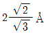
- 1Å
- 2Å
(정답률: 78%)
46. 프레스용 금형 재료의 구비 조건 중 옳지 않은 것은?
- 경도 및 인성이 클 것
- 내마모성이 클 것
- 열처리시 치수변화가 많을 것
- 기계 가공성이 좋을 것
(정답률: 86%)
47. 합금강의 경화능과 상부임계 냉각속도(upper critica lcooling velocity) 및 합금원소의 영향에 관 한 문제이다. 옳게 표현된 것은?
- Mn,Cr 등은 임계냉각속도를 크게하여 경화처리를 쉽게한다.
- Mn,Cr 등은 임계냉각속도를 작게하며 경화처리를 쉽게한다.
- Co는 임계냉각속도를 크게하며 경화처리를 쉽게한다.
- Co는 임계냉각속도를 작게하며 경화처리를 쉽게한다.
(정답률: 60%)
48. 고체내에서 온도의 변화에 따라 일어나는 동소변태란?
- 첨가원소가 일정량 초과할 때 일어나는 변태
- 단일한 고상에서 2개의 고상이 석출되는 변태
- 단일한 액상에서 2개의 고상이 석출되는 변태
- 한 결정구조가 다른 결정구조로 변하는 변태
(정답률: 76%)
49. 다음 열처리 조직 중 경도가 가장 큰 것은?
- Martensite
- Troostite
- Sorbite
- Bainite
(정답률: 88%)
50. 금형용 초경합금의 가공 방법으로 옳지 않은 것은?
- 방전가공기에 의한 가공
- 와이어 컷팅 방전가공에 의한 절단 및 프로파일 가공
- 다이아몬드 휠에 의한 성형연삭 가공
- 머시닝 센터에 의한 절삭가공
(정답률: 81%)
51. 단조작업한 강철재료를 풀림하는 목적으로서 적합하지 않은 것은?
- 내부응력제거
- 경화된 재료의 연화
- 결정입자의 조절
- 석출된 성분의 고정
(정답률: 74%)
52. 금형부품용도로 사용되고 있는 스프링강의 설명중 틀린 것은?
- 탄성한도가 높고 피로에 대한 저항이 크다.
- 소르바이트조직으로 비교적 경도가 높다.
- 정밀한 고급 스프링재료에는 Cr-V강을 사용한다.
- 탄소강에 납(Pb), 황(S)을 많이 첨가시킨 강이다.
(정답률: 80%)
53. 다음 플라스틱 금형 재료의 종류 중 피삭성과 인성이 가장 양호한 것은?
- 스텔라이트
- 내식강
- 비자성강
- 압연 강재
(정답률: 65%)
54. 석출경화와 가장 관계가 적은 것은?
- 냉각속도
- 석출온도
- 과냉도
- 회복
(정답률: 73%)
55. 금속재료에서 단위격자 소속 원자수가 2 이고, 충전율이 68%인 결정구조는?
- 체심입방격자
- 조밀육방격자
- 면심입방격자
- 단순입방격자
(정답률: 50%)
56. Roll이나 Gear같은 제품의 표면을 손상시키지 않고 경를 측정할 수 있는 것은?
- 로크웰 경도
- 루프 경도
- 비커스 경도
- 쇼어 경도
(정답률: 76%)
57. 다음 합금계 중 ESD(Extra Super Duralumin)합금계는 어는 것인가?
- Al - Cu - Zn - Ni - Mg - Co
- Al - Cu - Zn - Ti - Mn - Co
- Al - Cu - Sn - Si - Mn - Cr
- Al - Cu - Zn - Mg - Mn - Cr
(정답률: 55%)
58. 열경화성 수지나 충진 강화수지(FRTP)등에 사용되는 금형재료는 내열성, 내마모성, 내식성이 있어야 한다. 여기에 가장 적합한 재료는?
- STC
- STS
- STD
- SMC
(정답률: 61%)
59. 다음은 구상 흑연주철을 설명한 것이다. 틀린 것은?
- 용선에 마그네슘(Mg)을 첨가함으로써 구상흑연 조직을 얻는다.
- 세륨(Ce)을 첨가하여도 구상흑연 조직을 얻는다.
- 구상흑연 주철은 흑연에 의한 노치(notch)작용이 적기 때문에 강인하다.
- 구상흑연 주철은 편상흑연 주철보다 연성이 낮다.
(정답률: 60%)
60. 열처리 작업 중 마텐자이트로 되기 위한 팽창의 시간적 차이에 따라 발생하기 쉬운 현상은?
- 질량효과
- 담금질 균열
- 노치효과
- 마퀜칭
(정답률: 73%)
4과목: 정밀계측
61. 정밀 래핑된 凸면 위에 곡률 반지름이 R 인 광선 정반을 올려놓고 파장 0.64㎛인 적색광원으로 관측하니 중심에서 4번째의 간섭무늬 반지름이 22㎜이였다면, 곡률반지름 R은 약 몇 m 인가?
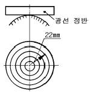
- 47.3
- 85.9
- 116
- 189
(정답률: 37%)
62. 테일러원리에 맞게 구멍을 검사하기 위한 정지측게이지로 알맞은 것은?
- 봉게이지
- 링게이지
- 플러그게이지
- 스냅게이지
(정답률: 58%)
63. 계기(計器) 지침(指針)의 두께(t)는 0.5㎜, 지침과 눈금판(板)과의 간격(d)는 1㎜, 눈 위치의 변동량(S)은 15㎜, 눈의 높이(h)를 250㎜로 하면, 시차(視差,parallax)는 몇 ㎜인가?
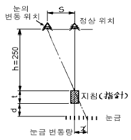
- 1.02
- 0.9
- 0.09
- 0.⑤
(정답률: 44%)
64. 어느 가공물을 측정한 결과 1.064 mm 가 지시치였다. 측정기에 -5㎛의 오차가 발생하였다고 하면 참값은?
- 1.039mm
- 1.069mm
- 1.014mm
- 1.114mm
(정답률: 80%)
65. 3차원 측정기를 이용하여 부품의 평면도 측정시 최소 측정점 수는?
- 3
- 4
- 5
- 6
(정답률: 80%)
66. 다음중 측정값의 제곱근 평균값(rms)을 갖는 표면거칠기 표시방법은?
- Ry
- Rq
- Rz
- Ra
(정답률: 76%)
67. 평면연삭기에서 100mm의 사인 바를 이용하여 30° 의 각도를 설치할 때 필요한 게이지 블록은 몇mm인가?
- 50.0
- 25.0
- 30.0
- 35.0
(정답률: 76%)
68. 모양 및 위치의 정밀도 종류에서 방향공차에 속하는 것이 아닌 것은?
- 경사도
- 직각도
- 동심도
- 평행도
(정답률: 71%)
69. 텔레스코핑 게이지의 주요 측정 용도로 다음 중 가장 적합한 것은?
- 깊이 측정
- 흔들림 측정
- 구멍 지름이나 홈의 나비 측정
- 마이크로미터 앤빌의 평행도 측정
(정답률: 74%)
70. 다음 컴퍼레이터 중 확대율이 크고 원격조작과 자동화가 용이하여 최근 가장 널리 사용되는 것은?
- 전기 마이크로미터
- 공기 마이크로미터
- 옵티미터
- 울트라 옵티미터
(정답률: 75%)
71. 그림과 같이 구면계를 이용하여 곡률반경 측정시 h=3.200mm,
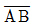
=80.476 mm 일 때 곡률반경 R는 얼마인가?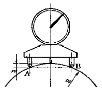
- 254.584 mm
- 282.584 mm
- 302.584 mm
- 322.584 mm
(정답률: 38%)
72. 두 점을 지지하여 200 ㎜의 전길이를 이용하는 표준자의 양끝에서 지지점까지의 위치는?
- 42.26 ㎜
- 44.06 ㎜
- 44.64 ㎜
- 47.72 ㎜
(정답률: 57%)
73. 다음 중 정밀 계측에서의 일반적인 평면도 측정방법이 아닌 것은?
- 빛의 간섭에 의한 평면도 측정
- 정반과 인디케이터에 의한 평면도 측정
- 수준기 및 오토콜리메터에 의한 평면도 측정
- 직선자 및 평면경에 의한 평면도 측정
(정답률: 46%)
74. 측정량에 대하여 다른 방향으로부터 접근할 때 지시의 평균값의 차는?
- 지시오차
- 측정오차
- 되돌림오차
- 시차
(정답률: 58%)
75. 측정 중에 표점이 눈금에 따라 이동하거나 눈금이 표점에 따라 이동하는 측정기는?
- 선도기
- 지시측정기
- 시준기
- 인디케이터
(정답률: 60%)
76. 오차에 관한 설명 중 틀린 것은?
- 계통적 오차는 같은 조건에서 측정하면 항상 같은 값이 나오므로 교정이 가능하다.
- 우연오차는 항상측정값에 나타나며, 측정횟수가 많을 때는 이 오차는 서로 상쇄되어 그 총합이 0 이된다.
- 측정압이나 온도에 의한 오차는 우연오차이다.
- 되돌림 오차란 지시량의 증가와 감소시 동일 위치에서의 지시값의 오차를 말한다.
(정답률: 59%)
77. 오토콜리메이터를 이용하여 측정할 수 없는 것은?
- 진동 측정
- 평면도 측정
- 진직도 측정
- 탄성체의 휨 측정
(정답률: 74%)
78. 전기 마이크로미터에서 출력전압과 변위와의 관계가 직선적이므로 가장 많이 사용되는 검출기는?
- 인덕턴스식 검출기
- 차동 변압식 검출기
- 요한슨식 검출기
- 포텐셔미터식 검출기
(정답률: 63%)
79. 호칭치수보다 3 ㎛ 작은 게이지 블록으로 셋팅되어 있는 지침 측미기를 이용하여 25.⑤5 ㎜를 얻었다면 제품의 실제 치수는?
- 25.⑤2 ㎜
- 25.025 ㎜
- 25.⑤8 ㎜
- 25.085 ㎜
(정답률: 38%)
80. 측정 가능한 정보를 얻기 위하여 미세한 정보를 확대하여 측정 가능한 정보를 얻기 위한 전자 유도 변환기의 차동변압기의 특징으로 틀린 것은?
- 직진성이 좋다.
- 측정범위가 좁다.
- 구조가 간단하고 내구성이 좋다.
- 전기 마이크로미터 등에 이용된다.
(정답률: 56%)